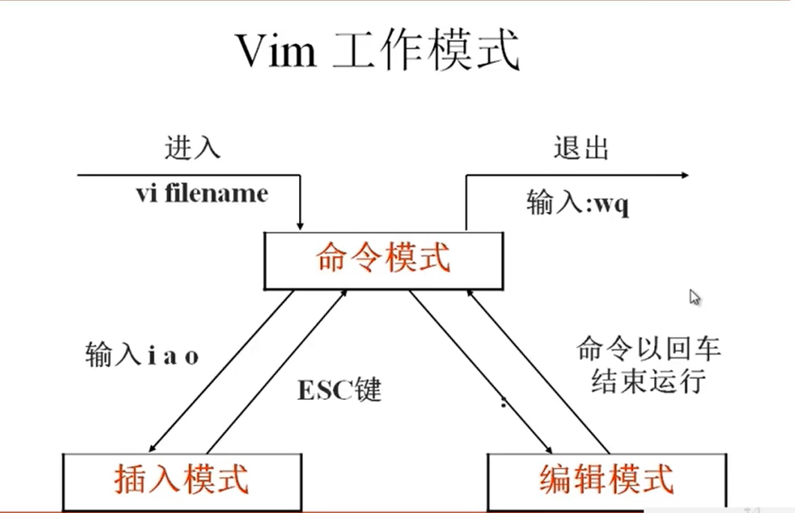
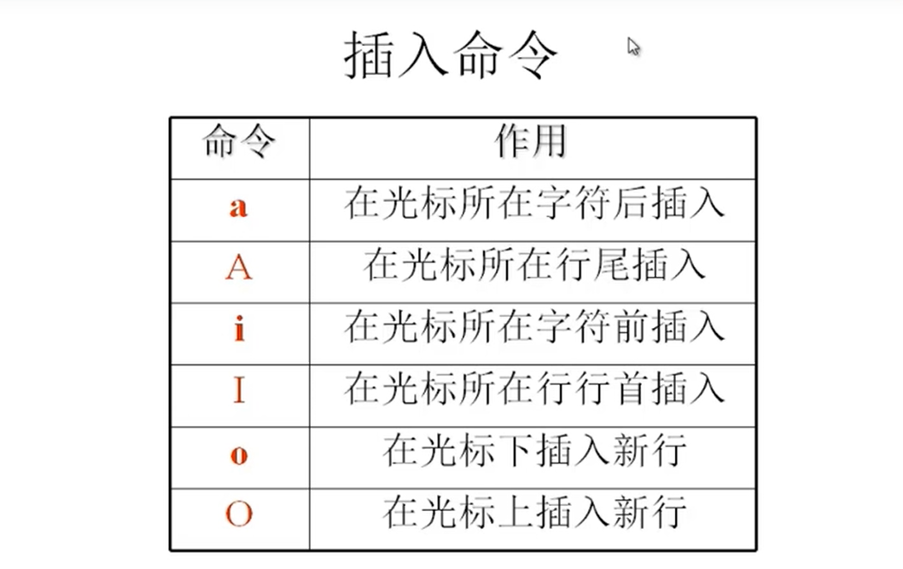
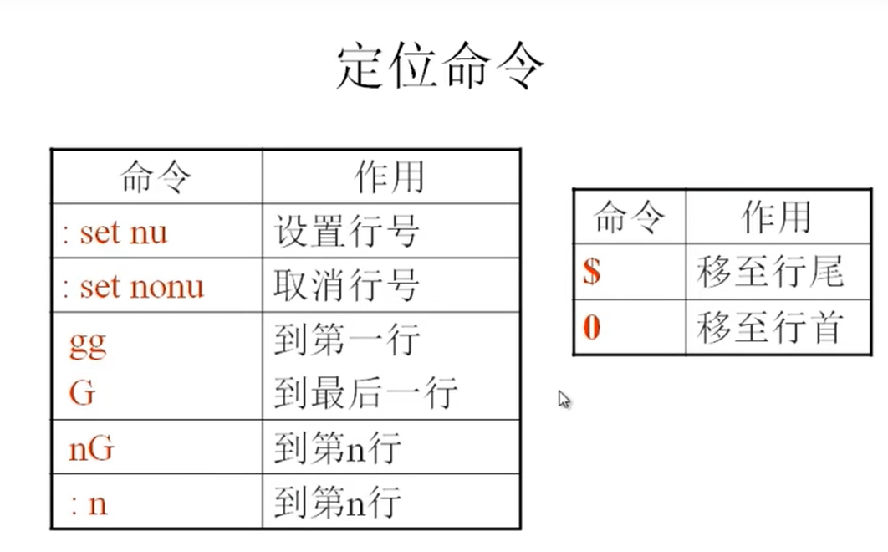
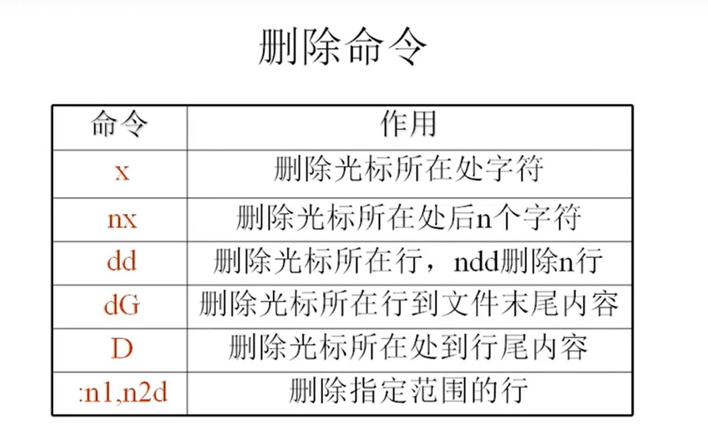
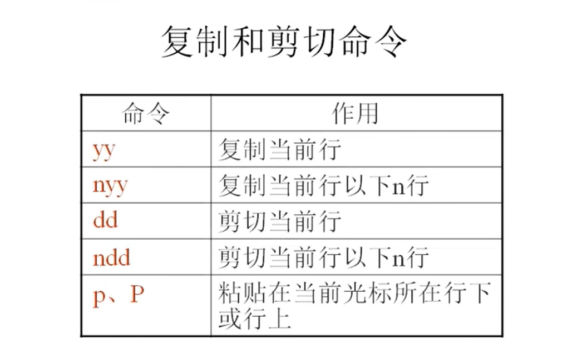
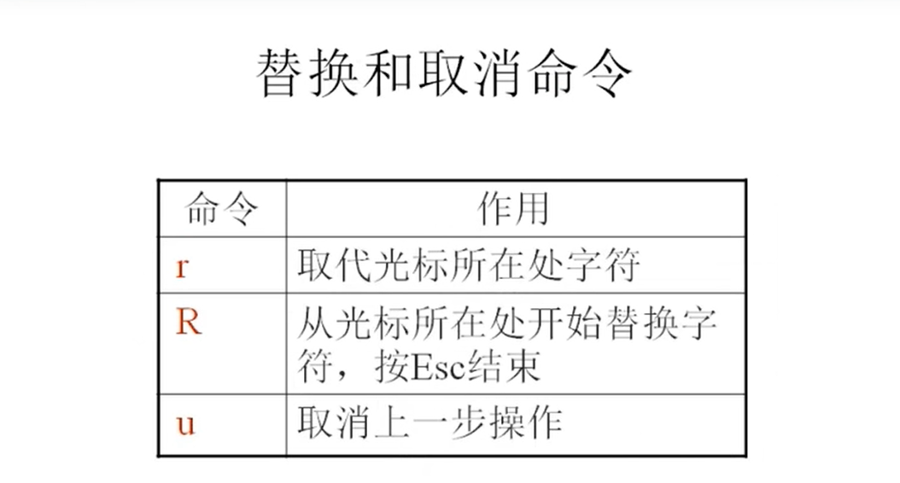
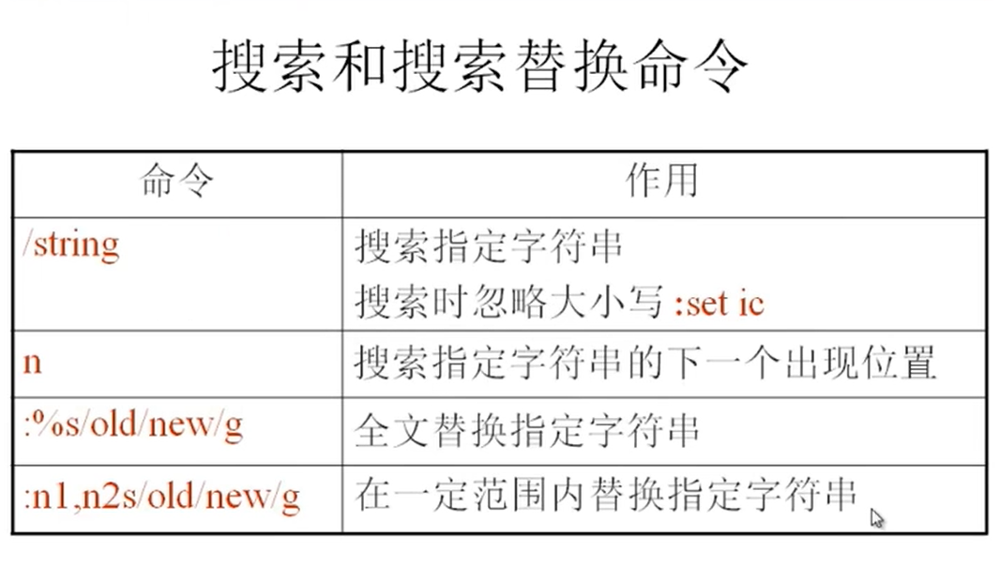
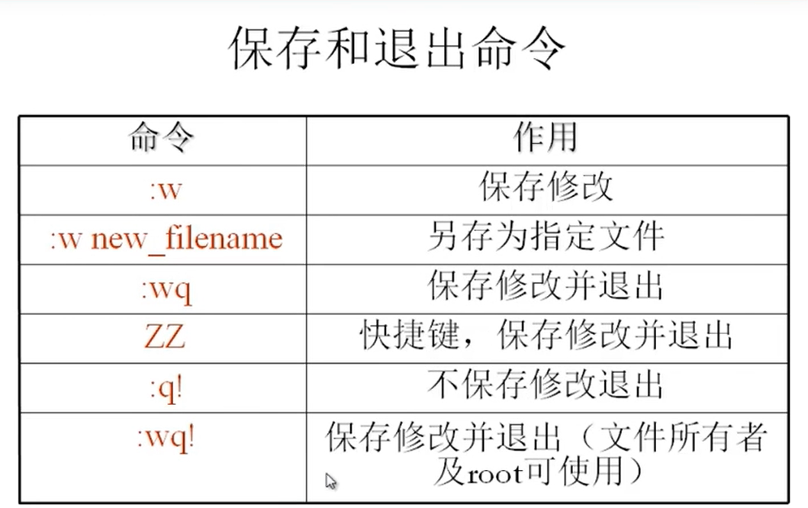

# 文本编辑器 Vim
Vim 简介：
Vim 是一个功能强大的全屏幕文本编辑器，是 Linux/UNIX 上最常用的文本编辑器，它的作用是建立、编辑、显示文本文件。
Vim 没有菜单，只有命令。








# Vim 使用技巧：
:r 文件名：导入一个文件的内容到当前文本中
:! 命令：在不退出 vim 的情况下执行系统命令
:r! 命令：在不退出 vim 的情况下当前命令所执行的结果导入到当前文本中
:map 快捷键 触发命令：自定义快捷键
例如：map ^P (ctrl + v + p) I#<ESC>
连续行注释 :n1,n2s/^/#/g
:n1,n2s/^#//g | |
:n1,n2s/^/\/\//g |
vim 配置文件位置：
管理员：/root/.vimrc
普通用户： /home/username/.vimrc